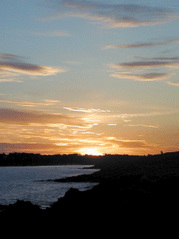
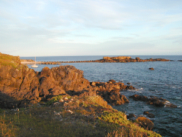
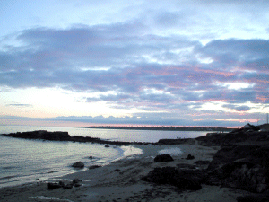
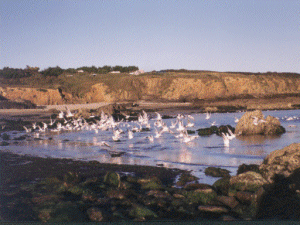

|

La côte de Rospico vue du sentier
côtier près de Trénez
|

L'Ile Percée vue du même endroit.
|
|

Dans le calme d'un soir d'été une
dernière lueur rose au dessus de la pointe de
Trévignon.
|

Envol de mouettes.
Nous sommes sur l'Ile Percée et le camping
se cache dans les arbres au-dessus de la falaise.

|

|
Si vous êtes
entré directement : entrée du site ici, accueil ici
|